Fitting PSF models: The astigmatism method
3D SMLM imaging can be performed by introducing a weak cylindrical lens into the imaging path to create slight astigmatism in the image [1]. This results in images of molecules with different ellipticity depending on their axial position. When a molecule is in focus, its image appears round. If the molecule is slightly above or below the focal plane, its image appears ellipsoidal. Calibration of the imaging system is needed to determine the orientation of the imaged ellipsoid (the camera chip might not be aligned with cylindrical lens) and the relationships between the axial position and ellipticity of the imaged molecules.
PSF model
A common PSF model for astigmatic 3D imaging is a rotated, elliptical Gaussian function given by the formula
| (1) |
where 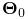 gives the expected photon count at the integer pixel position 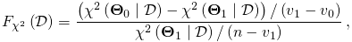 for a vector of parameters 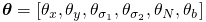, and
| 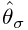 | ||||
| 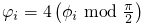 |
The entries of the vector 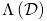 are as follows: 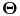
and 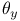 are the sub-pixel molecular coordinates, 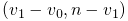
and  are the imaged widths of the molecule along
two perpendicular axes rotated by the angle 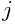 with respect to
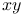 coordinates, 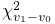 corresponds to the total number of
photons emitted by the molecule, and 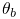 is the background
signal level.
are the imaged widths of the molecule along
two perpendicular axes rotated by the angle 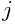 with respect to
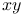 coordinates, 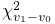 corresponds to the total number of
photons emitted by the molecule, and 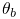 is the background
signal level.
Fitting of model parameters
Fitting of the model parameters can be done using least squares or maximum-likelihood methods. See PSF fitting methods for more information.
Crowded-field
ThunderSTORM supports fitting of multiple PSF models in a single fitting region. See crowded field for more information.
Estimating axial position
The estimate of the axial position  of a moleculeis determined
by minimizing the distance between the fitted values
of a moleculeis determined
by minimizing the distance between the fitted values  and the calibration curves
and the calibration curves  ,
obtained during the calibration
process, thus by
,
obtained during the calibration
process, thus by
| (2) |
Using the square root of the widths  slightly improves the
localization accuracy [1]. The minimization was performed
by the conjugate gradient method as implemented in the Apache Commons
Math library [] which was initialized from randomized
starting points to help avoid local minima.
slightly improves the
localization accuracy [1]. The minimization was performed
by the conjugate gradient method as implemented in the Apache Commons
Math library [] which was initialized from randomized
starting points to help avoid local minima.
Calibration of the imaging system
A file with values of the angle of rotation and approximations
of the calibration curves  is required. It can be created using the Cylindrical lens calibration
plugin. See Astigmatism calibration
for more information.
is required. It can be created using the Cylindrical lens calibration
plugin. See Astigmatism calibration
for more information.
Localization uncertainty
Let  be the standard deviation of a fitted Gaussian blob
in nm,
be the standard deviation of a fitted Gaussian blob
in nm,  is the (backprojected) pixel size in nm,
is the (backprojected) pixel size in nm,  is the number
of photons detected for a given molecule, and
is the number
of photons detected for a given molecule, and  is the background
signal level in photons calculated as the standard deviation of the
residuals between the raw data and the fitted PSF model. The uncertainty
in the lateral position of a molecule can be approximated by the formula
[3]
is the background
signal level in photons calculated as the standard deviation of the
residuals between the raw data and the fitted PSF model. The uncertainty
in the lateral position of a molecule can be approximated by the formula
[3]
| (3) |
The previous equation can be further adjusted to take EM gain of EMCCD cameras into account [2], giving the expression
| (4) |
We use the same equations for three dimensional localization but we
use  .
In the axial direction, we use a constant, user-specified value.
.
In the axial direction, we use a constant, user-specified value.
References
- [1] (2008) Three-dimensional super-resolution imaging by stochastic optical reconstruction microscopy, Science 319 (5864), pp. 810–3. External Links: Document. Cited by: Estimating axial position, Fitting PSF models: The astigmatism method.
- [2] (2010) Localization capability and limitation of electron-multiplying charge-coupled, scientific complementary metal-oxide semiconductor, and charge-coupled devices for superresolution imaging, Journal of Biomedical Optics 15 (6), pp. 066005. External Links: Document. Cited by: Localization uncertainty.
- [3] (2002) Precise nanometer localization analysis for individual fluorescent probes, Biophysical Journal 82 (5), pp. 2775–83. External Links: Document. Cited by: Localization uncertainty.
![[LOGO]]()